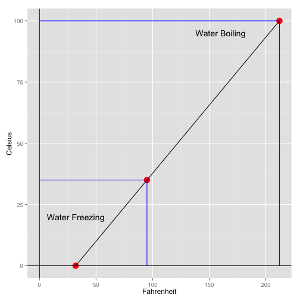

This is a simple Shiny App that can be used to convert temperatures in Fahrenheit to Celsius.

library(shiny)
library(shinythemes)
shinyUI(fluidPage(theme=shinytheme('flatly'),
pageWithSidebar(
headerPanel("Convert from Fahrenheit to Celsius"),
# Sidebar with input
sidebarPanel(
helpText("Input temperature in Fahrenheit and click Submit."),
numericInput('fahrenheit', "Temperature in Fahrenheit", 0, min=0, step=1),
submitButton("Submit")),
# Show the Data Entered and the Calculation
mainPanel(
h4("You entered:"),
verbatimTextOutput('fahrenheit'),
h4("Which in Celsius is:"),
verbatimTextOutput('celsius')))))
library(shiny)
library(shinythemes)
#function to convert fahrenheit to celsius
fahToCel<- function(fahrenheit) ((fahrenheit-32)*(5/9))
shinyServer(function(input, output) {
output$fahrenheit <- renderPrint({input$fahrenheit})
output$celsius <- renderPrint({fahToCel(input$fahrenheit)})})